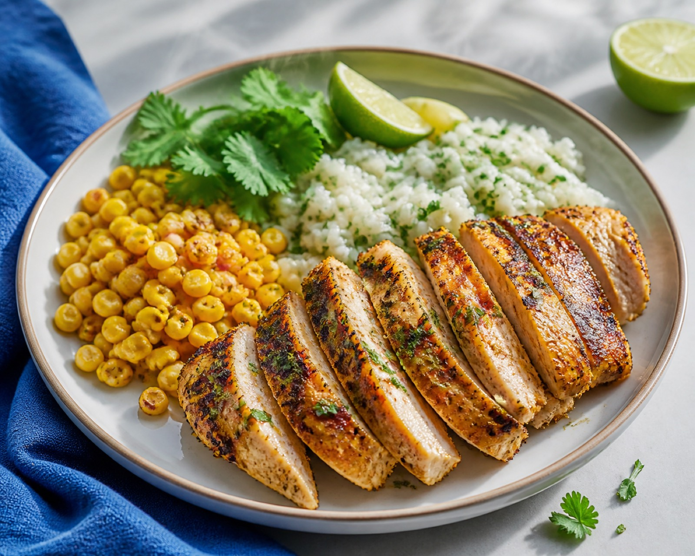
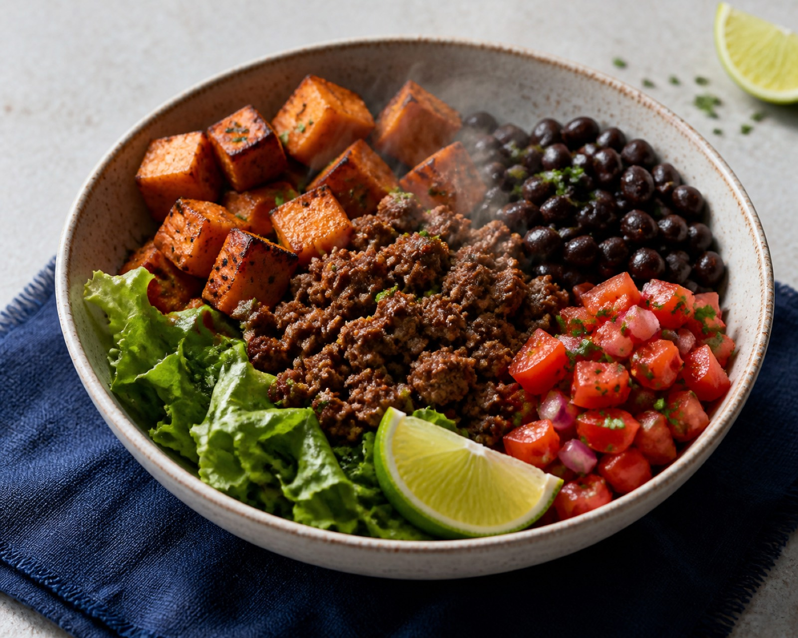
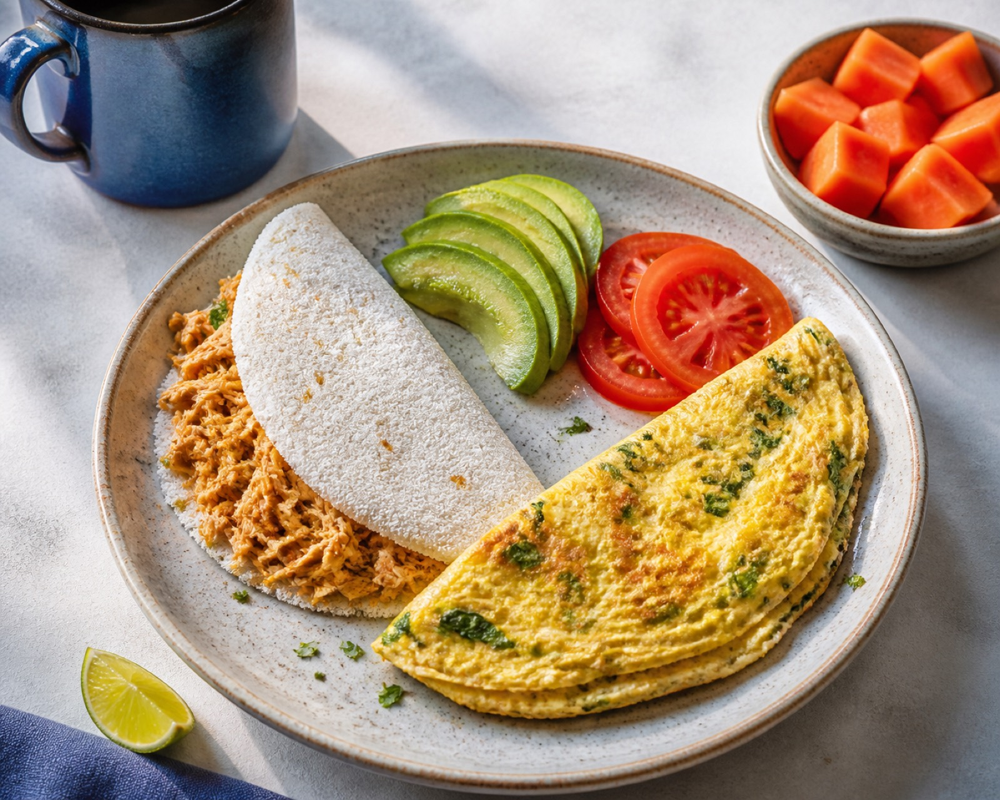

Oi. Eu sou a [ia] da cozinha. Me diz uma coisa:
qual é a sua meta?
Ganhar massa. Mas sem viver de frango sem graça, marmita triste e planilha de macro.
11:48
Feito. Calculei sua proteína do dia: [125g]
Sua meta virou almoço.
Comida de verdade, com o macro já resolvido. Olha o de hoje:

Frango crocante com arroz tostado
"Comece pela crosta. O resto vai sozinho."
Feito. Comi. 🔥
13:02
Boa. Café e almoço marcados: [80g] na conta. Faltam [45g] — a janta resolve.
marcou a refeição→a lista se ajusta→os macros atualizam→a próxima escolha fica mais fácil
Sua lista de compras se atualizou sozinha:
- peito de frango800 g · tem em casa
- arroz500 g · tem em casa
- tomate4 un · comprar
- limão3 un · comprar
lista atualizada · 3 refeições selecionadas
E a janta?
18:40

Bowl de carne com batata-doce
Frango sem graça nunca mais.
- Prazer — comer bem sem sentir que saiu do plano.
- Praticidade — decidir rápido sem depender de planilha.
- Progresso — enxergar avanço sem viver obcecado.
nosso papel: tirar a dieta do modo castigo

Tapioca de frango + omelete
Você bate proteína com comida que dá vontade de repetir.
Cozinha. Come. Cresce.
O app está no forno. As primeiras receitas saem no Instagram — chega junto.
Seguir @anabolia.appprecisão que dá fome